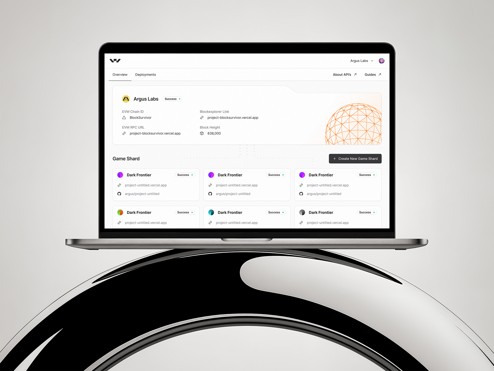
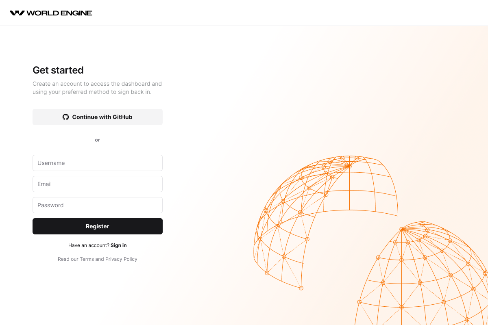
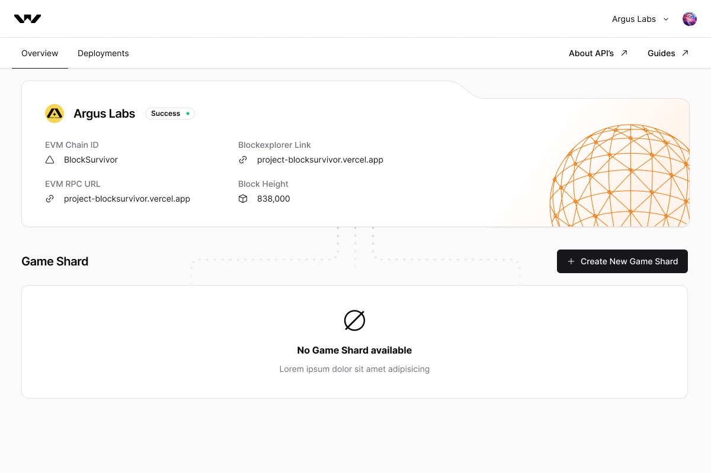
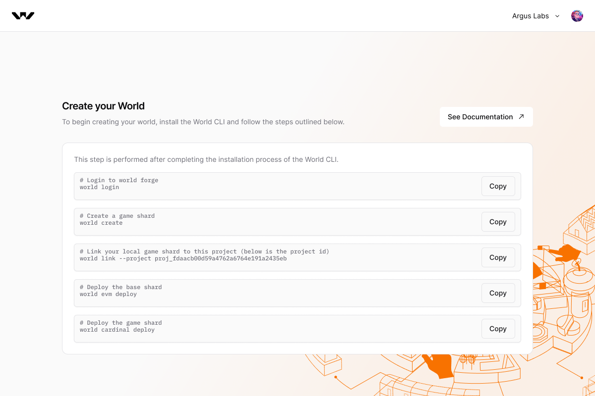
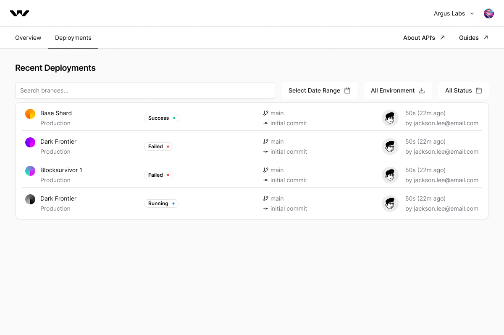

Web3 Game Deployer Engine
Five World CLI commands turn into one onchain game shard. I designed the dashboard that watches it happen: sign up, wire up a chain, deploy, and see it go from pending to live without leaving the browser.
Visit world.dev- Client
- Sector
- Role
- Team
- Period
- Surface

Overview
World Engine is an ECS, tick-driven framework for onchain real-time games, closer to Unity or Unreal than typical blockchain tooling. Each shard's state lives on a chain a studio can always reach, not inside one company's server. Shipping one still ran through a terminal though: five CLI commands, no shared view of what had actually deployed. I designed the dashboard around that CLI: register, create a world, and watch a shard go live.

Scope
- 01Developer interviews
- 02CLI flow mapping
- 03Information architecture
- 04User flows
- 05Wireframes
- 06Interface design
- 07Design system
- 08Empty & error states
- 09Prototyping
- 10Design QA
Problem
Deploying a game shard meant reading the docs in one tab and a terminal in another.
World CLI could spin up a game shard in five commands, but the dashboard around it stopped at sign-up: no shard status, no chain ID, no way to tell a base shard that deployed clean from a game shard that failed silently. The only feedback loop was re-running the deploy command and watching the terminal scroll.
Every deployment raised the same three questions with nowhere to answer them: is this chain live, what's it running on, and which commit shipped it. Answering meant cross-referencing a block explorer, a CLI log, and a Discord thread.
Cardinal's whole premise is that a shard's state doesn't live inside one team's infrastructure the way a Nakama server would: lose the account that manages a server and the game's state goes with it, but a game shard anchored onchain stays reachable through the chain itself. None of that showed up in the dashboard. A studio had no way to see, at a glance, that their shard's chain ID and block height were real guarantees, not just log lines from a CLI they'd have to trust.
Approach
One overview card for a shard's vitals, one guided checklist for the five commands that create it.
The Overview tab surfaces a game shard's EVM chain ID, RPC URL, block explorer link and block height as soon as it's live, with a status pill (Success, Running, Failed) doing the job a raw terminal log used to. Those same chain details are also a studio's way back in if they ever lose access to World Engine itself: the shard's state lives on the chain, not inside one team's server, so the chain ID and explorer link are enough to reach it independently.
Create your World turns the five World CLI commands, login, create, link, evm deploy for the base chain, cardinal deploy for the game shard's own logic and state, into a copyable checklist next to the docs, so a developer follows the same sequence whether they're reading the guide or the screen.
Recent Deployments lists every shard by branch, commit, environment and author, filterable by date range and status, so a failed deploy sits one glance from the successful one next to it, not in a different tab.
Screens




Results
Deliverables